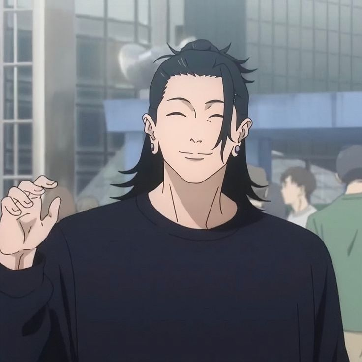

suguru geto
Suguru Geto is a Special Grade Jujutsu Sorcerer, one of Masamichi Yaga's students, and a former classmate of Gojo and Shoko Ieiri. His Cursed Technique allows him to absorb and control natural curses and use them for combat.
see more
gojo satoru
A teacher at Tokyo Metropolitan Curse Technical School and one of the protagonists of the hit anime and manga series Jujutsu Kaisen, Satoru Gojo is a tall and lean man in his late twenties with a head full of white hair and vivid blue eyes.
see more
ryomen sukuna
The earliest historical mention of the mythological Sukuna came from the Nihon Shoki, a document compiled by the Imperial family of Japan in 720, during the Nara period sukuna is the strogest sorcerer in his era
see more